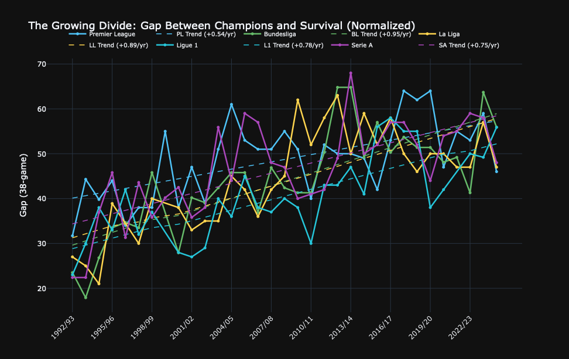
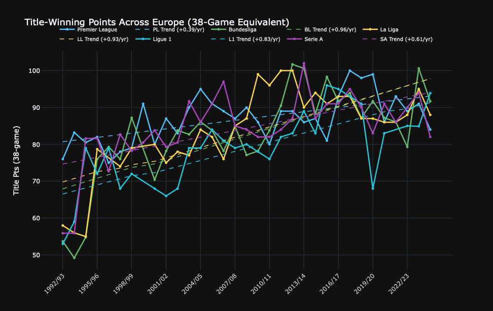
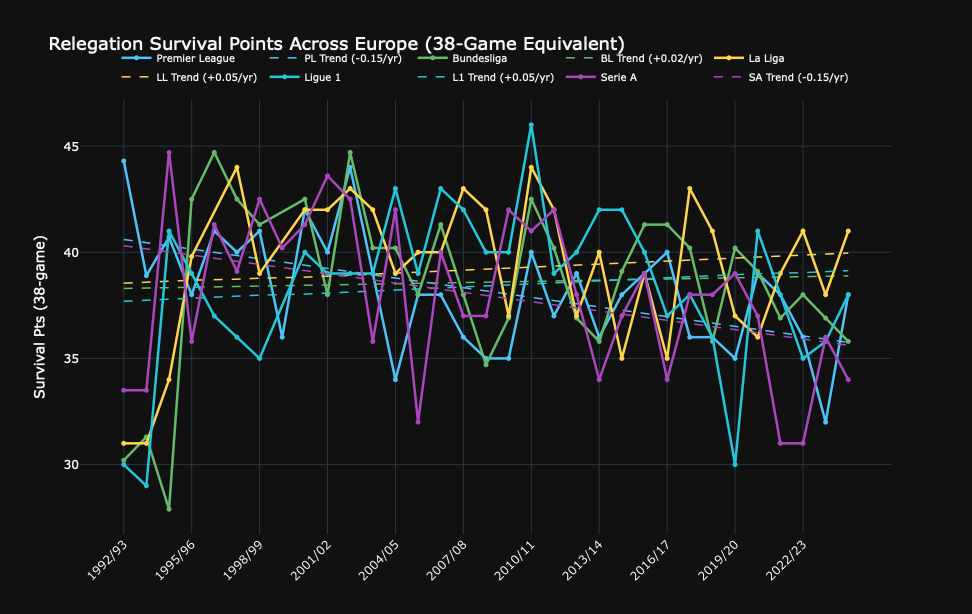
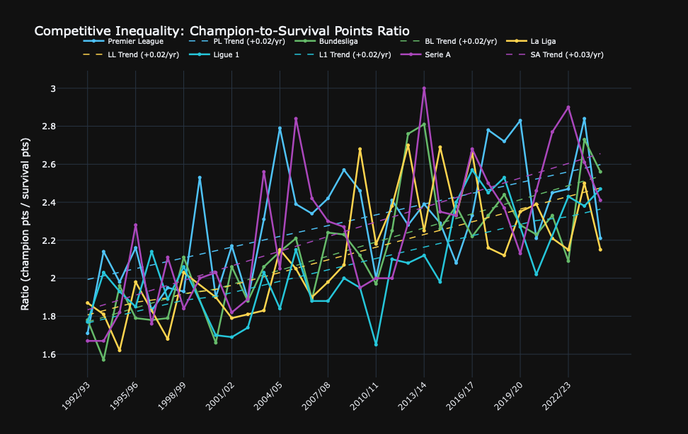
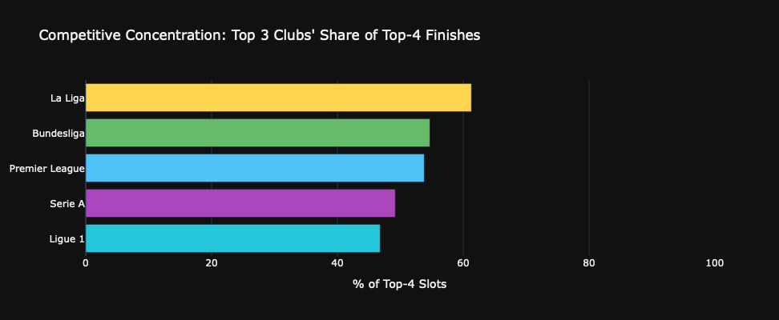
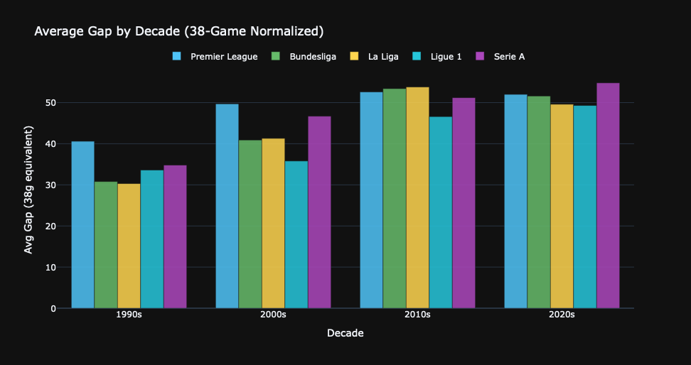

[PL] cache hit (0.0d old)
Premier League: 33 seasons
[BL] cache hit (0.0d old)
Bundesliga: 32 seasons
[LL] cache hit (0.0d old)
La Liga: 31 seasons
[L1] cache hit (0.0d old)
Ligue 1: 31 seasons
[SA] cache hit (0.0d old)
Serie A: 33 seasons
Total: 160 season-records across 5 leaguesThe European Football Divide
Cross-league comparison of competitive inequality (1992-2025)
Eric Schnitger, 2026
Key Findings
- All five leagues show a widening gap since 1992
- Bundesliga has the highest average gap (Bayern entrenched early)
- Ligue 1 shows the most dramatic inflection (PSG takeover, 2011)
- Premier League / La Liga have the steepest rate of increase
- Serie A is the most volatile (Calciopoli, bankruptcies)
- No league has reversed the trend through regulation alone
The Gap Over Time (Normalized to 38 games)

Title-Winning Points (Normalized)

Relegation Survival Points (Normalized)

Points Ratio (Unit-Free)

League Summary Statistics
| League | Country | Seasons | Teams | Avg Title (38g) | Avg Survival (38g) | Avg Gap (38g) | Avg Ratio | Max Ratio | Gap Trend (pts/yr) |
|---|---|---|---|---|---|---|---|---|---|
| Premier League | England | 33 | 20 | 86.900000 | 38.200000 | 48.700000 | 2.30x | 2.84x | +0.538 |
| Bundesliga | Germany | 32 | 18 | 82.900000 | 38.600000 | 44.300000 | 2.15x | 2.81x | +0.945 |
| La Liga | Spain | 31 | 20 | 83.800000 | 39.300000 | 44.500000 | 2.14x | 2.70x | +0.886 |
| Ligue 1 | France | 31 | 18 | 78.900000 | 38.400000 | 40.500000 | 2.06x | 2.57x | +0.779 |
| Serie A | Italy | 33 | 20 | 84.400000 | 38.000000 | 46.400000 | 2.24x | 3.00x | +0.753 |
Top-3 Club Concentration

Decade-by-Decade Gap

Conclusions
- The divergence is universal. Every top-5 European league is more stratified in 2025 than in 1992.
- The causes are structural. TV revenue concentration and Champions League prize money create a feedback loop.
- The rate differs by league. England and Spain accelerated fastest; Germany was already uneven; France had a single shock; Italy has been chaotic.
- Survival thresholds are universal. ~33-37 points (38-game equivalent) across all leagues.
- No regulation has worked. Not 50+1, not collective TV deals, not FFP.